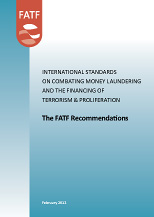

Key publications
The FATF Recommendations
adopted February 2012
International Standards on Combating Money Laundering and the Financing of Terrorism & Proliferation
Methodology for Assessing Compliance with the FATF 40 Recommendations and FATF 9 Special Recommendations
FATF Public Statement - 14 February 2014
Jurisdictions for which an FATF call for action applies
Improving Global AML/CFT Compliance: on-going process - 14 February 2014
Other monitored jurisdictions
FATF Annual Report: 2012-2013